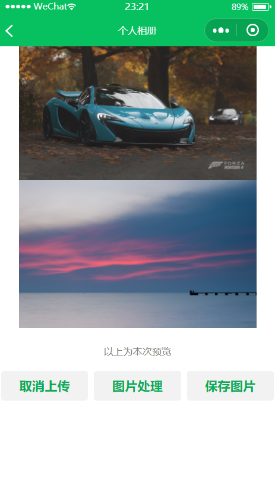
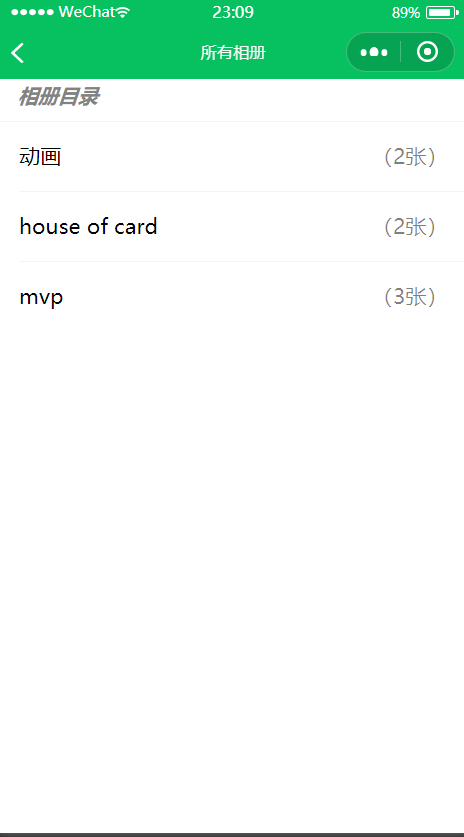
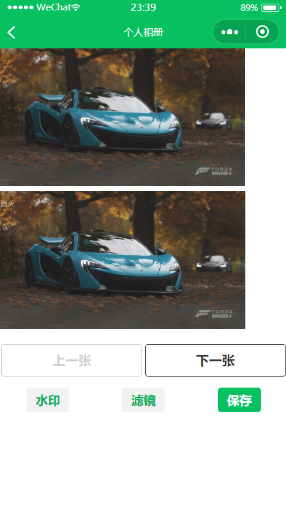
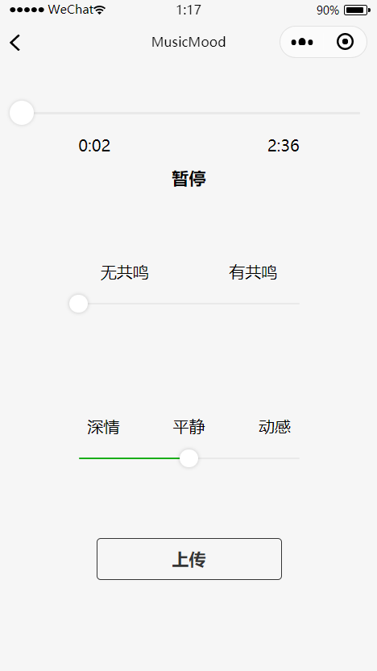

十天时间说来不长，主要有如下收获
GitHub版本管理使用
js、json编写页面脚本
html与css前端实现
nodejs云函数与云数据库开发
箭头函数与回调
项目代码https://github.com/MediocrityXT/WXminiProgram
微信小程序开发 个人相册 miniprogram-1 基本功能
本地从相机拍摄或图库上传图片不知道为什么api的两个选择都是从图库上传没有区别，选择已有相册/新建相册存入，并可以查看各相册。


这个部分实现比较简单，可以通过这个作业对微信小程序的结构有一个基本了解，并且接触到前后端的基本工作范围。前四天熬到3点把云上传和云查看功能做完然后发现其实这是后几天的工作QAQ
图像处理功能
可以对图片进行基础的处理（如水印、美颜等）
看完云开发guidebook我信心满满，挑明了sharp库随便用用就行，介不似送吗？
于是我开始了 长达两天的导库尝试
什么叫做放弃希望啊？——战术后仰
拿着sharp和jimp在本地小程序和云函数两侧反复横跳，不断尝试导入、构建、接着失败之后，我咨询到的某位同学表示：我用的canvas加css滤镜做的，其它的不会
惊为天人！
canvas???未曾设想的道路…
于是就变成了导入选定图片到画布然后加上text成为水印图

（水印text为微信用户名，上面的图是本地原图，下面是画布效果）竟然画布里的画质比上面的还好
至于css滤镜…只能本地显示不能保存修改啊…何况css不支持随着js变量直接更改滤镜参数…所以…滤镜按钮现在是个摆设嘿嘿
（html用style标签好像可以做到给样式传变量）
MusicMood miniprogram-3 设计文档
音乐情绪MusicMood小程序 【基本功能】 获取音乐，暂停和播放，拖动进度条。
【核心功能 记录情绪】 选择该按钮的同时下方会出现两个可拖动条：
无共鸣——有共鸣（调动起自己的情绪）
深情——平静——动感
[可附加]在按下评论的歌曲时间点，输入你的感想。还允许上传一张图片。
【核心功能 重播情绪】 你可以通过其他用户获得你发送的链接/在主页选择其他用户的名字，选择特定歌曲，在听歌的同时观看其他用户听到此处记录下来的情绪和评论。
最好将情绪数据可视化，比如显示波形图，波形图的笔触大小与共鸣度成正比，上下波动与第二个条相关。
在歌曲播放到对应时间时会弹出对应评论。如果有对应图片也会一并显示。
【数据库设计】
Userid
music
mood
timeSample []
resonanceSample []
feelingSample []
comment
获取音乐 最初准备使用QQ音乐的API，根据它web播放器的原理来实现搜索歌曲、下载歌曲。在研究一天之后，发现这几年QQ音乐的接口不断升级，没有现成教程，难以使用其下载API，只完成了搜索API的接入；另外发现小程序开发内置的官方音频组件innerAudioContext不支持m4a文件类型。
题外话，我交完代码之后发现网易云音乐支持外链，也有可以直接获取免费mp3音频的API，完全可以满足我的项目需求。QAQ
随后决定让用户从手机存储中上传音乐。但是我又发现微信只有图片选择上传APIwx.chooseImage，不支持其他类型文件。如果非要实现，可能得用FileSystemManager来从头实现该选择与上传的功能，十分复杂。
最后，我决定在云存储里预置两首测试音乐，通过button选歌😓。
音乐播放器 
用slider做了一个简单的进度条，获取duration和currentTime并通过format将描述转为分：秒。
format:function (origin )let time=origin.toFixed(0 )let second = time%60 let minute = (time-second)/60 if (second<10 ){return minute+':0' +secondelse {return minute+':' +second
另外innerAudioContext在Page()前面就加上const innerAudioContext = wx.createInnerAudioContext();在onShow()加入register函数以启动所有长效监听函数。
1 2 3 4 5 6 7 8 9 10 11 12 13 14 15 16 17 18 19 20 21 22 23 24 25 26 27 28 29 30 31 32 33 34 35 36 37 38 39 40 41 42 43 registerAudioContext:function (let that = this () => {(res )=> { audioDuration : that.format(innerAudioContext.duration),audioCurrent : that.format(innerAudioContext.currentTime),sliderTime : innerAudioContext.currentTime/innerAudioContext.duration * 100 console .log('取样于' +innerAudioContext.currentTime)(res ) => {isPlaying :true console .log('onPlay触发' +res)(res ) => {isPlaying :false console .log('onPause触发' +res)(res ) => {isPlaying : false console .log('播放结束' + res);(res ) => {console .log('播放音频失败' + res);(res ) => {isPlaying : false console .log('播放终止stop' + res);
数据库所用云函数 唯一数据库云函数uploadMood用来新增mood记录。同用户同音乐新上传的mood会重写代替以前的mood记录。
1 2 3 4 5 6 7 8 9 10 11 12 13 14 15 16 17 18 19 20 21 22 23 24 25 26 27 28 29 30 31 32 33 34 35 const cloud = require ('wx-server-sdk' )env : cloud.DYNAMIC_CURRENT_ENVconst db = cloud.database() exports .main = async (event, context) => {let check = db.collection("musicmood" ).where({music :event.music,openid :event.openidconsole .log(check)if (check){await db.collection("musicmood" ).where({music :event.music,openid :event.openidreturn await db.collection("musicmood" ).add({data :{music :event.music,openid :event.openid,time :event.timeSample,resonance :event.resonanceSample,feeling :event.feelingSampleres =>console .log(res)console .error)
重播情绪 首先选择用户（未实现），获得对应openid之后访问数据库，请求该用户的音乐mood和comment记录，选择播放音乐后在本地播放音乐同时将数据可视化。
以下为倒叙
可视化需要将存在云上的取样数组解开并得到对应时间的情绪具体数值。desample将判断超过取样time就取出resonance和feeling数值。
所以需要考虑到onTimeUpdate监听方法的时间间隔不稳定（0.1s-0.3s间不定)，可能对情绪重播效果存在负面影响。
1 2 3 4 5 6 7 8 9 10 11 12 13 14 15 16 17 desample:function (let index = this .data.indexlet timeSample = this .data.timeSampleif (index == timeSample.length) return let resonanceSample = this .data.resonanceSamplelet feelingSample = this .data.feelingSampleif (timeSample[index]<=innerAudioContext.currentTime){this .setData({resonance :resonanceSample[index],feeling :feelingSample[index]this .setData({index :index+1
因为已经在数据库设置所有人可读，所以使用本地函数getMood读取数据即可。
1 2 3 4 5 6 7 8 9 10 11 12 13 14 15 16 17 getMood:function (const db = wx.cloud.database()"musicmood" ).where({music :this .data.musicUrl,openid :this .data.openidres =>this .setData({timeSample :res.data[0 ].time,resonanceSample :res.data[0 ].resonance,feelingSample :res.data[0 ].feelingerr =>console .log(err)
在获取openid的时候出现了一些问题：login云函数回调速度较慢，必须要异步才能对getMood传入正确openid而非undefined。
Promise对象使用异步较难，没研究明白所以使用setInterval多次检测openid存在即可调用下一步函数。
chooseUser:function (this .getOpenId()let inter = setInterval (()=> { if (this .data.openid){this .getMood()clearInterval (inter)100 )
总结感想 网络API对于构造http请求中header的referer有限制，只能写明由微信小程序发出。
官方提供组件存在一些小问题，但是没有其他选择可以代替，否则只能从头写自定义组件。
云函数端只能引入node.js库；本地微信开发者工具也难以导入已经npm install的sharp/jimp等图像处理库，扩展性受限。
但是，
微信小程序逻辑简单，便于学习。
提供的微信api在移动端适配良好，功能强大。
免费的云存储和数据库，非常方便，管理简单。
微信开发者工具编译器比较强大，代码格式要求不严，编程比较轻松。
左侧直接预览手机显示效果，测试十分简单，还可以微信直接扫码，真机测试。